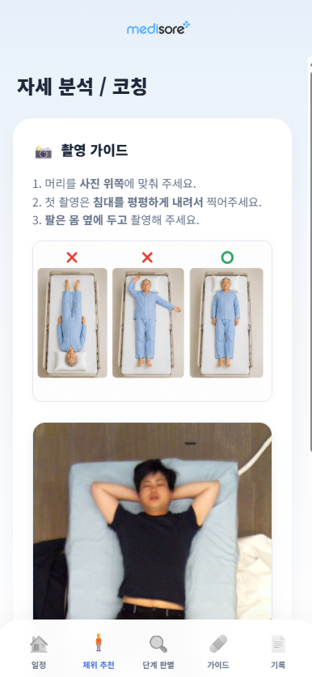
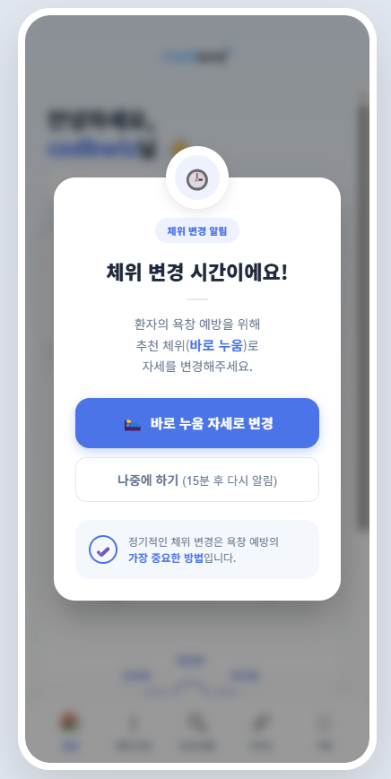
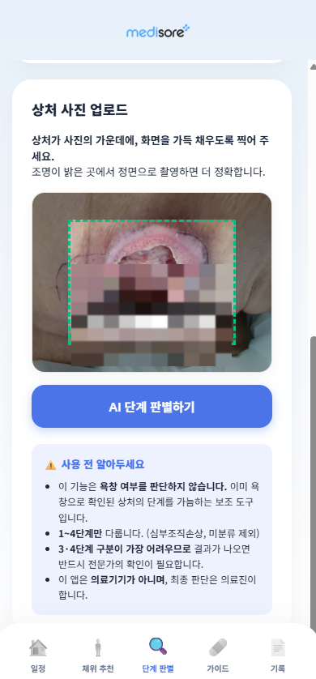
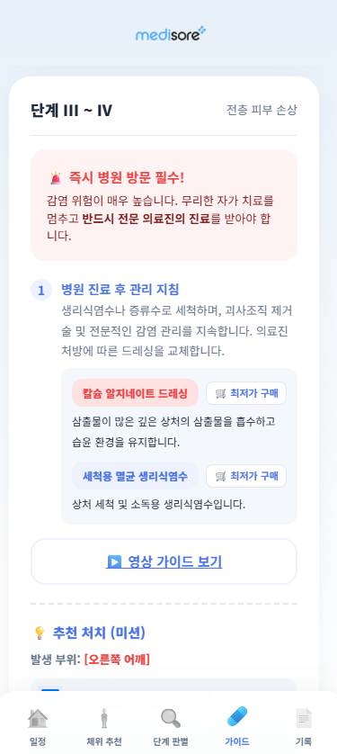
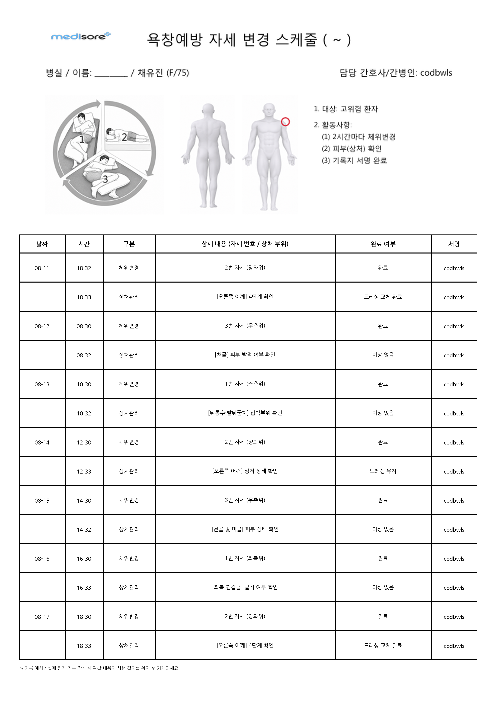
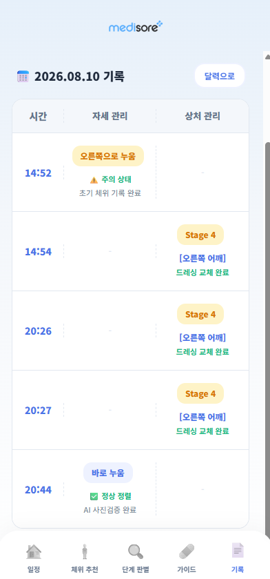

요양기관과 비전문 간병인을 위한
AI 욕창 예방 및 스마트 돌봄 솔루션
2시간 체위 알림부터 AI 자세 분석, 7일 관리기록지 자동 생성까지.
누구나 쉽게 욕창 관리를 표준화하고 돌봄의 공백을 없앱니다.

MediaPipe 기반 관절 분석으로
완벽한 체위 변경을 코칭합니다
단순히 시간을 알려주는 것에 그치지 않습니다. 스마트폰 카메라로 환자의 자세를 촬영하면, MediaPipe AI 관절 좌표 추정 알고리즘이 어깨와 골반의 기울기 각도를 측정하여 욕창 예방에 가장 이상적인 30° 측위 자세를 정확히 안내합니다.
-
2시간 순환형 체위 스케줄러 (왼쪽 ⇄ 오른쪽 ⇄ 바로 누움) 설정한 주기(2시간 / 2.5시간 / 3시간)에 맞춰 다음 추천 자세를 자동으로 푸시 알림합니다.
-
촬영 가이드 & 신체선열 자동 감지 머리 위치, 침대 수평, 팔 위치 등 올바른 촬영 기준을 안내하고 체중 편중을 실시간 교정합니다.
-
원터치 '체위 변경 완료' 및 알림 관리 바쁜 간병 중에도 탭 한 번으로 변경 상태를 기록하고 15분 후 다시 알림 기능도 제공합니다.


사진 한 장으로 끝나는 욕창 단계 판별과
환자 맞춤형 드레싱 처치 가이드
비전문 간병인과 가족 보호자도 어려움 없이 환부 사진을 스마트폰으로 촬영하면, AI 비전 엔진이 Stage 1부터 Stage 4까지 상처 단계를 즉시 자동 분류합니다. 또한 처치 가이드 탭으로 이동하면 환부 상태에 맞는 적합한 드레싱 재료(칼슘 알지네이트, 멸균 생리식염수 등)와 최저가 구매, 영상 가이드를 알기 쉽게 제공합니다.
-
스마트폰 촬영 기반 Stage 1~4 단계 자동 판별 피부 발적(1단계)부터 진피 손상(2단계), 피하지방 노출(3단계), 근육 노출(4단계)까지 정밀 판독합니다.
-
처치 가이드 탭: 맞춤 드레싱 준비물 & 세척 지침 삼출물이 많은 깊은 상처 흡수용 '칼슘 알지네이트 드레싱' 및 세척용 멸균 생리식염수 가이드를 안내합니다.
-
영상 가이드 보기 & 드레싱 재료 최저가 구매 연동 초보 간병인도 영상을 보며 따라 할 수 있고, 필요한 의료용 드레싱 소모품을 손쉽게 주문할 수 있습니다.


돌봄 공백 없는 인수인계와
7일 관리기록지 PDF 자동 다운로드
간병인이 교대되거나 가족이 환자를 이어받을 때 생기는 기록 단절을 원천 차단합니다. 시간대별 자세 관리 내역과 상처 드레싱 기록이 타임라인으로 누적되며, 보호자 공유 및 요양기관 제출용 7일 관리기록지 PDF(ReportLab 기반)를 원클릭으로 출력할 수 있습니다.
-
7일 관리기록지 PDF 1초 자동 생성 주간 체위 변경 이행률, 환부 사진 변화, 드레싱 일지가 깔끔한 PDF 보고서로 즉시 다운로드됩니다.
-
시간대별 자세 + 상처 관리 타임라인 14:52 오른쪽 누움(주의) → 14:54 어깨 드레싱 → 20:44 정상 정렬 등 실시간 이력이 한눈에 정리됩니다.
-
간병인 교대 전용 인수인계 모드 교대 간병인이 환자의 오늘 상태와 다음 체위 일정을 직관적으로 파악할 수 있습니다.


실시간 AI 자세 분석 & 체위 코칭 시뮬레이터
환자의 체위 사례를 선택하고, MediaPipe 관절 추정 및 기울기 각도 측정, 자동 간병 기록 생성을 직접 체험해 보세요.
욕창 예방과 돌봄을 위한 6대 핵심 기능
간병인과 가족 보호자가 매일 겪는 체위 변경의 번거로움과 기록의 누락을 스마트하게 해결합니다.
2시간 순환형 체위 스케줄러
환자의 상태에 맞춘 2시간/2.5시간/3시간 주기 설정과 다음 체위(좌측 ⇄ 우측 ⇄ 앙와위) 자동 알림을 제공합니다.
MediaPipe 신체선열 코칭
스마트폰 카메라로 촬영된 환자의 관절 좌표를 추정하여 30° 측위 각도 유지 여부와 골반 틀어짐을 실시간 분석합니다.
AI 상처 단계 판별 & 드레싱 추천
환부 사진 촬영 시 Stage 1~4 단계 자동 판별과 상처 상태에 맞는 적합한 드레싱 재료 및 처치 가이드를 제공합니다.
7일 관리기록지 PDF 다운로드
주간 체위 변경 이행률과 환부 사진 기록을 ReportLab 기반의 깔끔한 PDF 보고서로 1초 만에 자동 생성합니다.
시간대별 통합 돌봄 타임라인
체위 변경 시간, AI 정상 정렬 검증 여부, 환부 드레싱 교체 내역을 시간 순서대로 일목요연하게 기록합니다.
돌봄 인수인계 원클릭 리포트
간병인 교대 및 가족 보호자 인계 시 당일 체위 이행 상태와 특이사항을 한눈에 공유하여 돌봄 공백을 방지합니다.
메디소어 서비스 로드맵
요양 현장과 보호자의 실제 피드백을 바탕으로 매주 더 편리한 돌봄 기능을 선보입니다.
체위 코칭 & AI 상처 판별 코어
2시간 순환 스케줄러, MediaPipe 관절 각도 측정 및 상처 단계 분류 알고리즘 구축
- 순환형 체위 타이머 & 푸시 알림
- 어깨·골반 30° 신체선열 분석 엔진
- 7일 관리기록지 PDF 출력 기능
요양기관 파일럿 & 인수인계 고도화
요양원 및 주야간보호센터 현장 실증 테스트 및 간병인 교대 리포트 기능 최적화
- 요양기관 다인실 환자 통합 대시보드
- 비전문 간병인을 위한 음성 체위 가이드
- 보호자 안심 알림톡 연동
스마트 센서 매트리스 연동
IoT 압력 센서 매트리스와 실시간 연동하여 무자각 체위 상태 자동 감지
- 실시간 체압 분포 맵 자동 동기화
- 낙상 위험 및 야간 이상 움직임 감지
요양기관과 가정의 욕창 관리,
메디소어로 더 쉽고 안전해집니다
요양원, 요양병원, 주야간보호센터, 개인 간병인 및 가족 보호자를 위한
무료 시연 및 14일 체험 프로그램을 신청해 보세요.